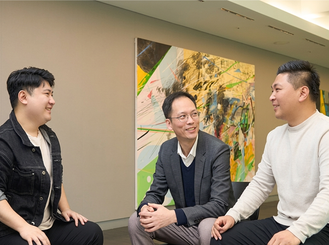

> 인재채용 > 복리후생
Benefits복리후생
한일인의 일과 삶을 든든하게 지원합니다
임직원이 일에 몰입하고 삶의 균형을 지킬 수 있도록, 다섯 가지 영역에서 두터운 복지를 제공합니다.
연금·보험부터 휴가, 보상, 자기계발, 여가와 건강까지 — 한일人의 일상 곳곳을 세심하게 지원합니다.

복리후생 제도
-
01
연금 · 보험
- 국민연금
- 고용보험
- 산재보험
- 건강보험
-
02
휴무 · 휴가 · 행사
- 연차제도 · 반차제도
- 경조휴가 · 포상휴가
- 출산휴가 · 육아휴직
외 4종 (남성출산휴가, 보건휴가 등)
-
03
보상 · 수당 · 지원
- 퇴직금 · 경조금
- 장기근속 · 우수사원 포상
- 자녀교육비 · 가족 의료비 지원
외 11종 (주거비, 사내대출 등)
-
04
사내제도 · 성장
- 사내 외국어강좌
- 직무능력향상교육
- 리더십강화교육
-
05
편의 · 여가 · 건강
- 사내 동호회
- 건강검진
- 휴양시설
인생의 순간마다 함께합니다
- 결혼 · 출산
- 경조휴가 · 경조금 · 출산휴가 · 육아휴직 · 남성출산휴가
- 자녀 양육
- 자녀교육비 지원 · 가족 의료비 지원
- 건강 관리
- 건강검진 · 헬스비 지원 · 보건휴가
- 여가와 재충전
- 사내 동호회 · 휴양시설 · 포상휴가
- 배움과 성장
- 외국어강좌 · 직무능력향상교육 · 리더십강화교육